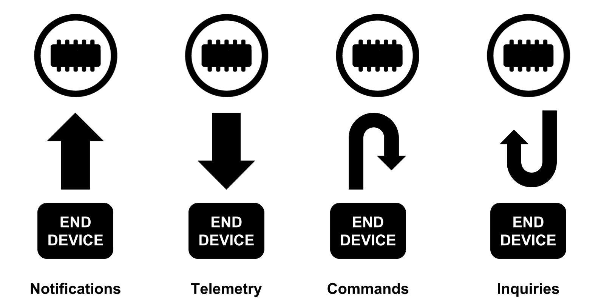
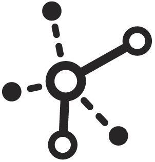
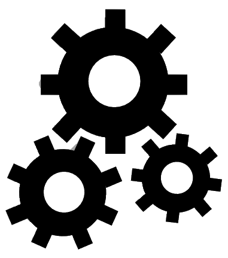
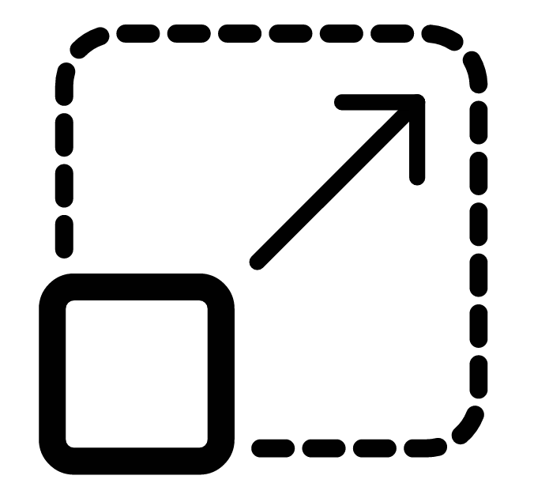
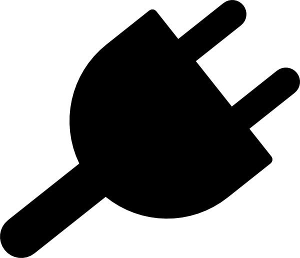
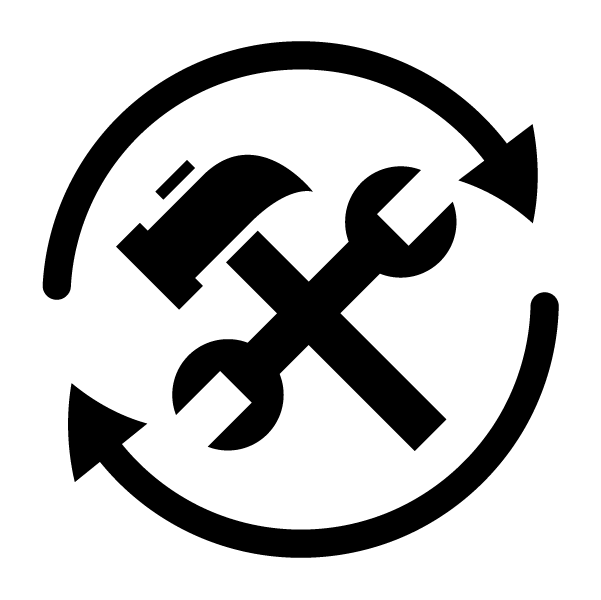
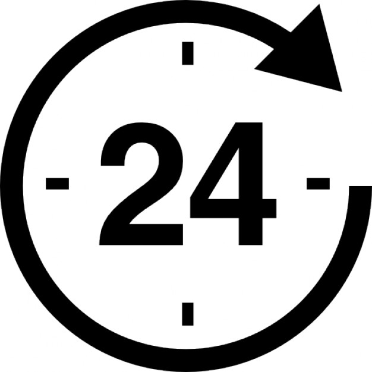
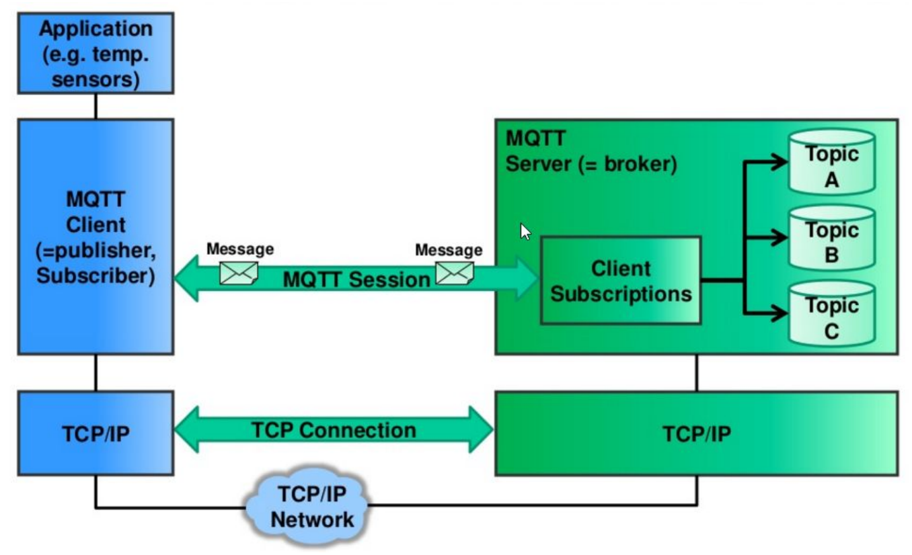

IoT Architectuur
- Data Visualisatie
- Data bewaren en opslaan
- Communicatie met things
- Connectie met things
IoT Architectuur

Communicatie Patronen

Requirements
Loosley Coupled

Interoperability

Scalable

Plugable

Legacy

Robust

Open
Use Case: Slimme schakelaar
- Integratie van een slimme schakelaar
- Slimme schakelaar kan 1 op 1 vervangen worden met bestaande
- Schakelaar kan remote worden uitgezet
- Actuator agnostiek
- Groot gebouw: ± 1000 devices
Hoe oplossen?
Message Oriented Middleware
Message Oriented Middleware
- Extra laag in het systeem
- Zorgt voor de routing
- Asynchroon
- Niet geschikt voor real time
- a.k.a. Message Broker
Message Brokers
- AMQP
- XMPP
- ZeroMQ
- STOM
- MQTT
MQTT
- Message Queue Telemetry Transport
- Publish Subscribe model
- Topic based
- TCP/IP Based
- Lage overhead
- Functionaliteit
- QoS
- Message Retention
- Last Will & Testament
Publish Subscribe Pattern
- = Observer Pattern
- Gang of Four
- Behavioral Pattern
- Loosly Coupled
Topic based
dit/is/mijn/topic
TCP/IP Based
- Applicatie laag
- Abstractie van data
- HTTP is document gebaseerd

MQTT Praktisch
- Online brokers
- Selfhosted
MQTT Praktisch
- mosquitto
- mosquitto_clients
Node - RED
sudo npm install -g --unsafe-perm node-red